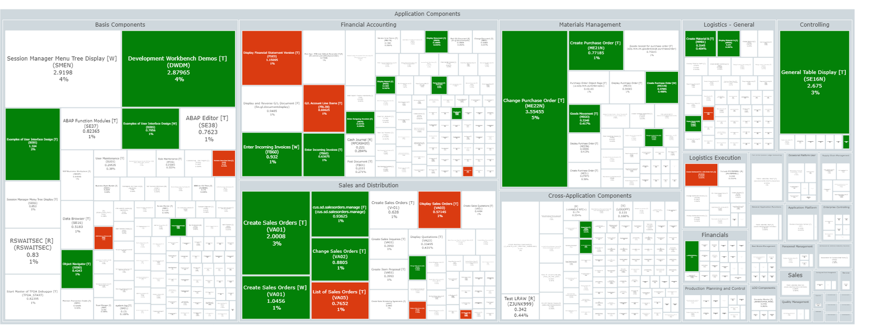
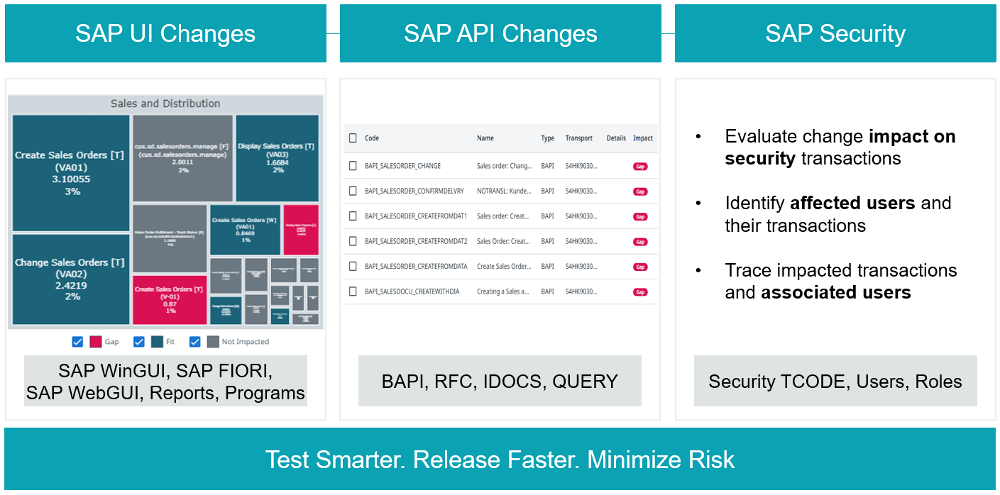
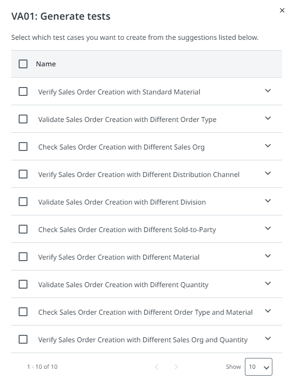
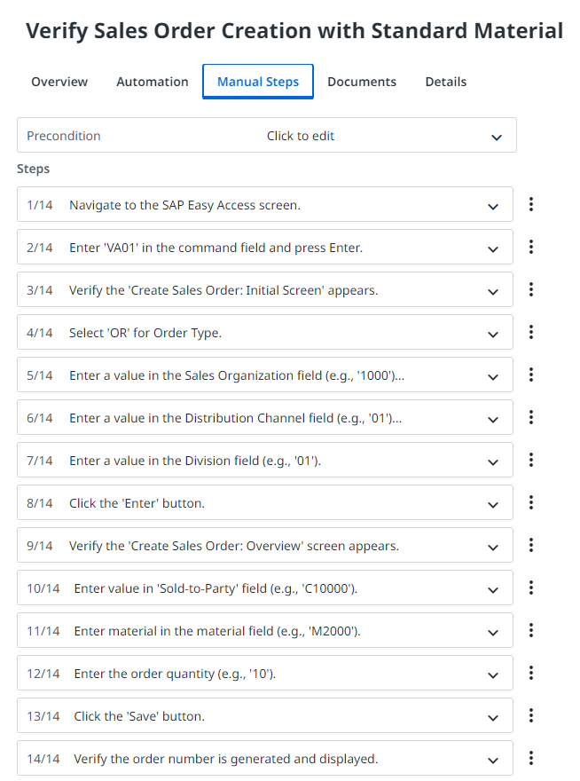
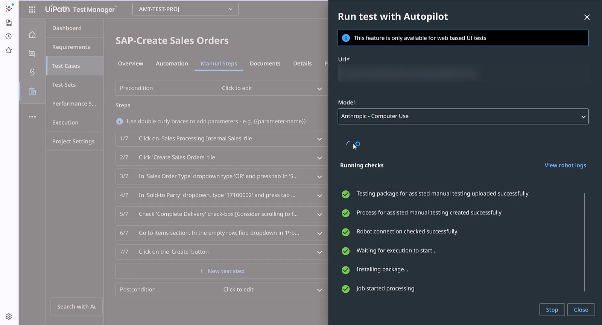
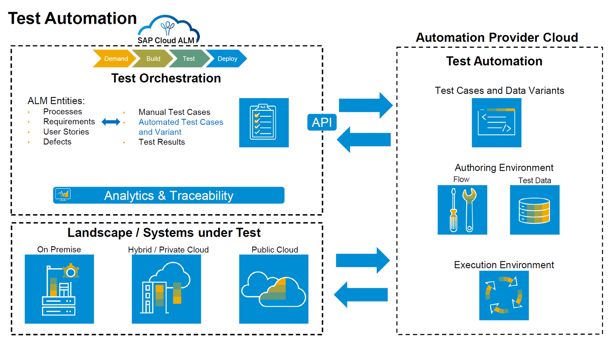
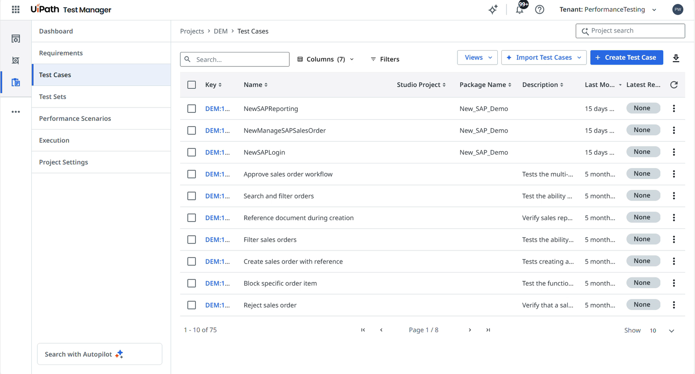

演示 + 现场 Demo
🧩 SAP 测试¶
今天一整天，你测试的都是一个小型 Web 应用 UiBank。现在来看看同一个 Test Cloud——Test Manager、Autopilot for Testers、机器人和编码智能体——如何测试 SAP，这可是企业运行中最关键的业务系统之一。你不需要有 SAP 经验：关键术语都列在下面了。
📖 两分钟了解 SAP¶
SAP 是一家 ERP 软件厂商：企业用这套系统来运营财务、销售、采购、人力资源和生产制造，所有业务共享同一套数据。
| 术语 | 含义 |
|---|---|
| SAP ECC / SAP S/4HANA | SAP ERP 的上一代和当前一代产品。很多企业正在从 ECC 迁移到 S/4HANA。 |
| RISE with SAP | SAP 推出的方案，帮助企业迁移到云上的 SAP S/4HANA。 |
| SAP GUI / SAP Fiori | 经典的 Windows 桌面客户端，以及现代化的 Web 界面。 |
| Transaction（事务） | 在 SAP 中通过事务代码打开的功能，例如用 VA01 创建销售订单。 |
| Transport（传输请求） | 一组 SAP 变更打成的包，从开发环境依次移到测试环境和生产环境。每一个传输请求都是一次需要重新测试的理由。 |
| Order-to-Cash / Procure-to-Pay | 端到端的业务流程：从客户下单到收款（订单到收款），以及从采购申请到向供应商付款（采购到付款）。 |
| Clean Core | SAP 的「干净核心」原则：保持标准系统不做修改，把自定义逻辑放到系统之外的扩展和 API 中。 |
| SAP Cloud ALM | SAP 用于管理实施项目的工具，涵盖需求和测试。 |
🤔 SAP 测试为什么难：覆盖率的错觉¶
长期以来，SAP 团队汇报的都是覆盖率：执行过的事务或测试用例所占的百分比。但覆盖率衡量的是容易统计的东西，而不是容易出问题的东西。如今，出问题的地方往往不在 SAP 内部，而在 SAP 与周边系统之间的衔接处。
Clean Core
自定义逻辑从 ERP 中移出，转到扩展、SAP BTP 服务和 API 中。
SAP 周边的 SaaS
Salesforce、ServiceNow 和 Workday 如今承担了过去由 SAP 负责的部分业务。
更快的发布节奏
SAP 按季度发布，其他厂商按周发布。与十年前相比，流经企业的变更多得多。
发布后期的典型故障包括：集成交接逐个测试都通过，放在一起却超时；SAP Fiori 界面在季度发布后悄悄变了样；权限变更不声不响地产生错误结果。一份「SAP 覆盖率 100%」的报告，一个都发现不了。
💼 客户在哪些场景用 Test Cloud 测试 SAP¶
回归测试
跟上 SAP 的季度更新节奏，只运行每次变更所影响的测试。
S/4HANA 迁移
测试从数据准备到系统切换的每个阶段，并在各批次迁移中复用这些测试。
SAP GUI 与 SAP Fiori
自动化每一种 SAP 界面，界面变化时还能自我修复。
跨系统流程
测试横跨 SAP、Salesforce、Oracle、Workday 和自定义应用的端到端流程。
客户收获了什么：3 年 529% 的投资回报率，6 个月收回成本；测试执行速度提升 62%，手动工作量减少 52%，测试覆盖率提高 55%。EDF Renewables 在五个月内实现了 90% 的 SAP 测试自动化。
🚀 Test Cloud 能为 SAP 做什么¶
🎯 决定测什么¶
SAP Heatmap
连接生产 SAP 系统，展示大家实际在用哪些事务，让你先测试业务关键的那些。
Change Impact Analysis
当一个传输请求准备就绪时，AI 会找出它影响的流程，并按风险排序给出需要重跑的测试清单，而不用把所有测试都重跑一遍。
Test Gap Analysis
找出还没有任何测试的关键 SAP 流程。

使用热力图：方块越大，说明该 SAP 组件或事务的使用越频繁。
Change Impact Analysis（变更影响分析）覆盖 UI 变更、API 变更和安全变更。🤖 创建并自动化测试¶
生成测试用例
Autopilot 根据需求或 Heatmap 数据为 SAP 事务创建测试用例，就像它为 UiBank 做的那样。
生成测试数据
SAP Test Data Agents（SAP 测试数据智能体）按需生成逼真的数据，例如客户、物料和销售订单。
低代码或编码方式自动化
业务用户和开发人员都能构建自动化，可以在 Studio 中，也可以借助编码智能体，就像你今天做的一样。
自我修复
当 SAP 界面发生变化时，自动化会实时修复选择器，而不是直接失败。


为 VA01（创建销售订单）生成的测试用例：左边是建议列表，右边是其中一个用例的手动步骤。
▶️ 马上运行¶
Autonomous Test Execution（自主测试执行）直接根据自然语言步骤来运行手动 SAP 测试——和你在测试用例中用过的 Run Autonomously（自主运行）是同一个功能。从项目第一天起你就能开始测试，哪怕还没有任何自动化。

在一个 SAP Fiori 测试用例上使用 Run Autonomously。🔗 融入 SAP 交付流程¶
Test Cloud 可与 SAP Cloud ALM 连接：Cloud ALM 管理需求，Test Cloud 负责在 SAP 和非 SAP 系统上自动化并运行测试，每个结果都会关联回对应的需求。它还能连接 CI/CD 工具。借助 Maestro，一条流水线就能测试整个流程——SAP 传输请求、Fiori 审批、Salesforce 同步，再到发票——最后给出一个统一的结论。

SAP Cloud ALM 编排测试；UiPath 自动化并运行测试，再把结果回传。每个项目的集成方式请在解决方案设计阶段确认。📈 负载下测试¶
性能测试已内置在 Test Cloud 中。你可以复用已有的 UI 和 API 自动化，用同一套自动化同时覆盖功能测试和性能测试。
🧰 专用负载测试工具
- 一套单独的脚本，由性能工程师编写
- 在协议层生成模拟的 HTTP 流量
📈 Test Cloud 中的性能测试
- 复用你的功能自动化，由 Autopilot 规划测试场景
- 通过 UI 呈现真实用户体验，包括页面渲染
你可以运行负载、峰值、压力和耐久测试，在云端或本地均可，并可从 CI/CD 流水线触发。结果会显示在 Test Manager 中，与功能测试结果放在一起。

Test Manager 中的 Performance Scenarios（性能场景），就在你熟悉的 Test Cases 旁边。🎬 现场 Demo¶
Demo 即将上线
等预发布环境恢复运行后，这部分的 Demo 会补充到这里。
📏 衡量流程，而不是测试用例¶
今天你是按测试用例汇报结果的。但在 SAP 环境中，业务方关心的是另一个问题：订单到收款（order-to-cash）这条流程，从头到尾、在它涉及的每个系统上，到底能不能跑通？
按业务流程汇报
「430 个测试通过了 412 个」变成「订单到收款：Salesforce 交接环节有两处失败，都源于季度发布。」
端到端测试变得便宜
自动生成的测试、自我修复和编排运行，让端到端测试成为每次回归的基线。人的时间则留给探索那些智能体预料不到的情况。
QA 把关，智能体执行
智能体负责生成、运行和分析测试。测试人员决定哪些流程必须保持绿色，哪些风险可以接受。
🔄 与你今天所做的对应关系¶
1
决定测什么：Heatmap 和 Change Impact Analysis。今天：来自设计文档的需求。
2
创建测试用例和数据：Autopilot 和 Test Data Agents。今天：Autopilot 生成了测试用例。
3
马上运行：Autonomous Test Execution。今天：Run Autonomously。
4
自动化并在机器人上运行。今天：Autopilot 或编码智能体自动化了测试用例，再由测试集运行它们。
5
保持稳定运行并解读结果：自我修复和测试洞察。今天：在测试集结果上使用 Generate Insights（生成洞察）。
📚 了解更多¶
培训环境
登录 https://staging.uipath.com/partnersuccess，使用租户 MadalinaTest。